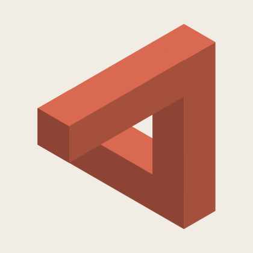

IMPOSSIBLE ROOM
Perspektif Odası
Bazen çözüm, baktığın yerdedir.
Bakış açını değiştirmek için sürükle.
Perspektif tamamlandı.

Bu cihazda 3D sahne açılamadı. Bulmaca WebGL gerektirdiği için şu an oynanamıyor; çizim, odaların fikrini gösteriyor.
Üç oda tamamlandı.
Her biri yalnızca tek bir bakıştan bütündü.
Sahneye odaklanıp ok tuşlarıyla bakış açısını değiştir. Shift ile daha ince ayar yaparsın.